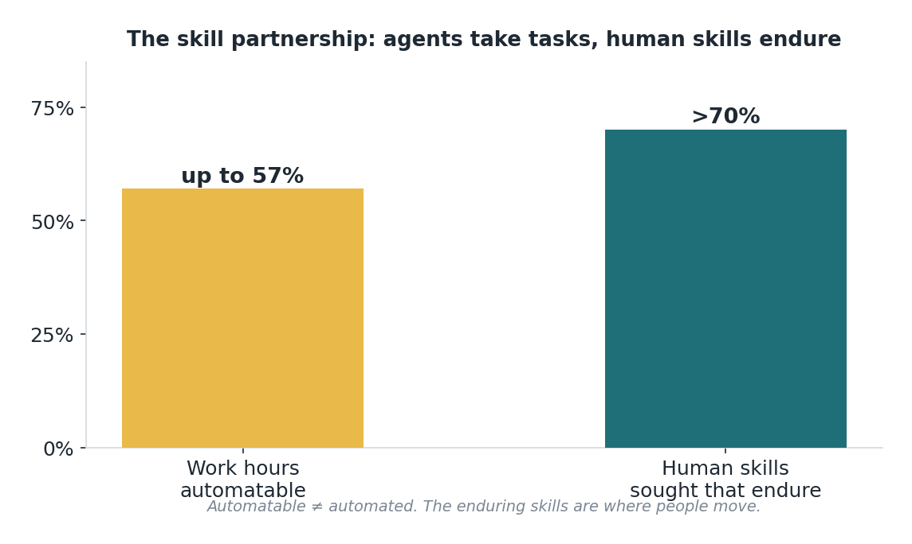

Edisi 12 — Commit & Develop: pilihan, coaching, dan kemitraan skill
Di balik debat reskilling ada sepasang angka yang menyelesaikan sebagian besar kecemasannya. MGI menemukan bahwa hingga 57% jam kerja mungkin bisa diotomasi, tapi lebih dari 70% skill manusia yang benar-benar dicari organisasi itu jenis yang bertahan lama — judgment, komunikasi, problem-solving, membangun relasi. Bisa diotomasi itu beda sama sudah diotomasi, dan skill yang tetap diminati itu sangat dominan manusiawi. Celah itulah seluruh tesis investasi buat kapabilitas.

Ini mendefinisikan kemitraan skill, bukan substitusi. Kalau sebagian besar jam kerja bisa berpindah ke agent sementara skill yang dicari tetap manusiawi, konfigurasi optimalnya adalah orang mengerjakan kerja bernilai skill tinggi dengan agent membawa beban rutin. ROI dari pembangunan kapabilitas itulah yang menutup jarak antara dua fakta itu — itu memindahkan orang dari jam-jam yang bisa diotomasi ke skill yang bertahan lama, yang mana persis di situlah nilai organisasi terkonsentrasi.
Soal cara membangun kapabilitas, buktinya condong ke coaching yang tertanam dibanding training sesekali, dan progresi berlevel dibanding sertifikasi satu kali. Bayangkan kapabilitas dalam level — dari Level 1 (sadar) sampai Level 5 (mampu menetapkan standar dan menegakkannya) — dengan coaching yang menyatu ke pekerjaan nyata, menaikkan orang di tangga itu. Workshop mentransfer informasi; coaching yang tertanam mentransfer kapabilitas, karena skill terbentuk lewat latihan berulang dan didukung di tugas nyata, bukan lewat slide deck.
Komitmen juga punya dimensi ROI, dan ini agak berlawanan dengan intuisi: pilihan justru meningkatkannya. Orang berkomitmen ke perubahan yang mereka bantu bentuk dan menolak perubahan yang dipaksakan ke mereka, jadi memperluas zona pilihan — keleluasaan nyata soal bagaimana perubahan itu mendarat di peran seseorang — menaikkan adopsi hampir tanpa biaya tambahan. Mandat terasa efisien tapi menghasilkan kepatuhan, yang meluruh jadi non-pemakaian diam-diam; komitmen sejati, yang diraih lewat pilihan, menghasilkan adopsi yang tahan lama. Jalur yang keliatan lebih murah justru jadi lebih mahal dalam jangka panjang mana pun.
Ada biaya yang dilewatkan versi yang ceria: kesedihan atas peran yang dirancang ulang. Waktu sebagian dari peran yang berharga berpindah ke agent, orang mengalami kehilangan yang nyata, dan kehilangan yang nggak diakui memperlambat adopsi secara terukur. Menganggarkan waktu dan ruang buat menyebutnya bukan sentimentalitas — itu throughput. Tim yang diizinkan memproses perubahan itu bergerak lewat itu lebih cepat daripada tim yang buru-buru dilewatkan, dan itu langsung terlihat dari seberapa cepat kapabilitas dan adopsi naik.
Buat pengukuran, lacak progresi kapabilitas (pergerakan naik level), bukan penyelesaian training; dan lacak komitmen (pemakaian yang dipilih, bukan cuma patuh), bukan kehadiran. Ini yang memprediksi hasil yang beneran penting. Tenaga kerja yang naik tangga kapabilitas dengan komitmen sejati adalah aset yang mengubah setiap dolar sebelumnya dari belanja teknologi dan proses jadi hasil — ujung payoff dari rantai 1:3:5.
Satu peringatan pengukuran terakhir yang menghubungkan edisi ini ke seluruh seri: hati-hati merayakan milestone yang salah. Sesi training yang terselenggara, sertifikasi yang diterbitkan, dan lisensi yang dibagikan semuanya kerasa kayak progres, dan semuanya bisa sama sekali terputus dari nilai. Metrik yang beneran memprediksi return adalah progresi kapabilitas di tugas nyata dan pemakaian yang genuine serta dipilih — dan keduanya lebih lambat dan lebih susah dihitung daripada kehadiran. Leader yang tertekan buat menunjukkan momentum cenderung condong ke angka yang gampang, dan itu persis cara sebuah program keliatan sibuk padahal nggak ke mana-mana. Pertahankan pengukuran kapabilitas dan komitmen, meskipun keduanya lebih susah dimasukkan ke slide. Itu satu-satunya indikator awal yang terhubung ke hasil cycle-time, kualitas, dan biaya yang dikejar seluruh investasi 1:3:5 ini.
Teruskan ini ke siapa pun yang memegang L&D: danai coaching yang tertanam dan kapabilitas berlevel, bukan training sesekali — itulah yang mengonversi sisa budget AI-nya.
Sumber
- MGI: hingga 57% jam kerja bisa diotomasi, >70% skill yang dicari bertahan lama — via McKinsey (2026).
- Zona pilihan; coaching yang tertanam; level sertifikasi 1→5 — McKinsey (7 Agustus 2026).